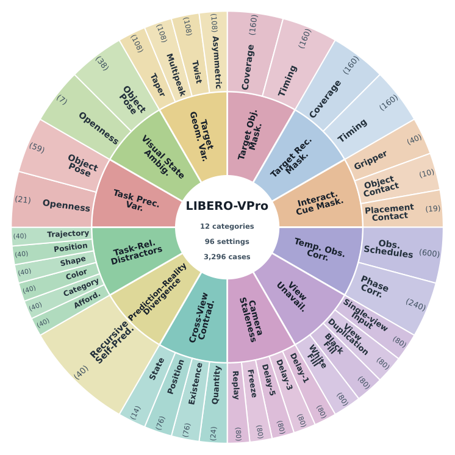
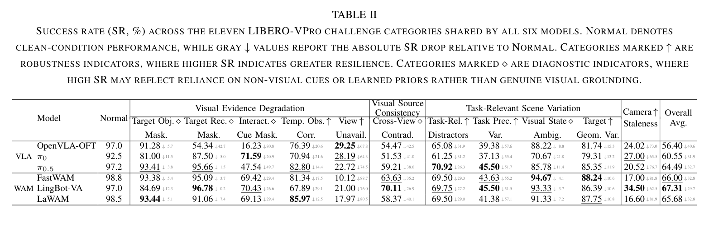
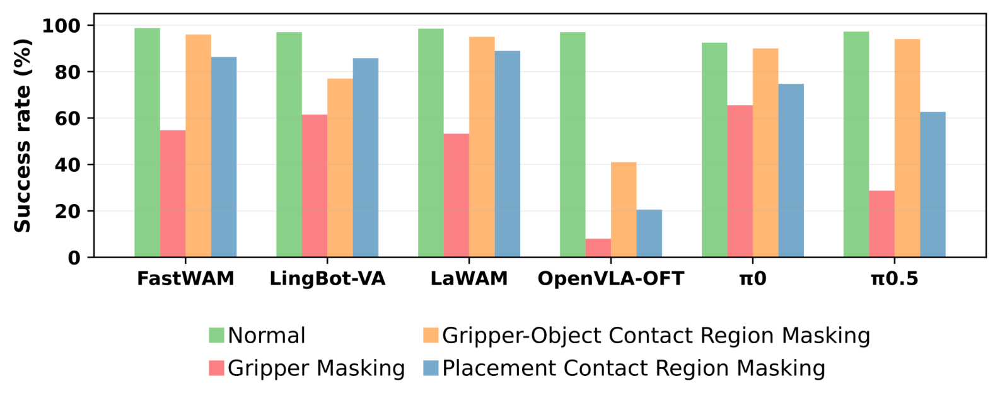
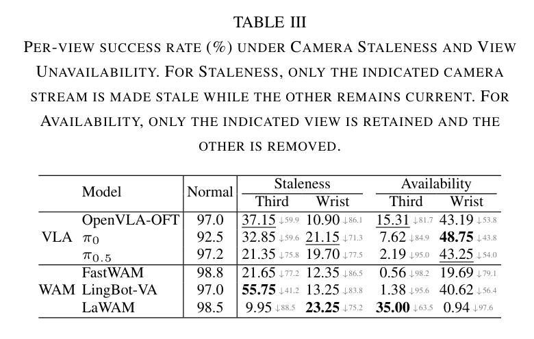
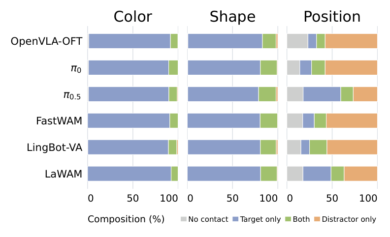

01 Target-Object Masking
SuccessLIBERO-VPro: Benchmarking Closed-Loop
Visual Robustness of Robotic Foundation Models
1 Singapore Management University 2 Princeton University 3 Fudan University
† Corresponding author and project lead.
Abstract
Robotic foundation models achieve impressive performance on standard manipulation benchmarks, yet these evaluations typically assume clean, timely, and consistent visual observations. We introduce LIBERO-VPro, a benchmark for systematically evaluating the closed-loop visual robustness of robotic foundation models by perturbing the visual evidence available during execution.
LIBERO-VPro covers four complementary dimensions, including Visual Evidence Degradation, Camera Staleness, Visual Source Consistency, and Task-Relevant Scene Variation, spanning 12 challenge categories, 96 experimental settings, and 3,296 task-condition cases. We evaluate three vision-language-action models and three world-action models over approximately 196,000 simulated episodes, complemented by 200 real-world rollouts on a Franka Research 3.
Our results reveal that strong nominal performance can mask substantial weaknesses in visual grounding and adaptation. Models often remain successful despite severe object-level occlusion, yet degrade sharply when local interaction cues are disrupted or familiar spatial priors are violated. They are also highly sensitive to stale or missing observations and struggle when changed task preconditions require behavioral adaptation.
Finally, VLAs and WAMs exhibit distinct robustness profiles, showing that visual robustness is multi-dimensional and architecture-dependent. LIBERO-VPro provides a systematic diagnostic framework for developing robotic foundation models that can more reliably ground and adapt their actions under challenging visual conditions.
Benchmark overview
LIBERO-VPro organizes 12 challenge categories into four complementary dimensionsof closed-loop visual robustness: Visual Evidence Degradation tests missing or corrupted cues; Camera Staleness tests delayed, frozen, or replayed views; Visual Source Consistency tests conflicting camera or predicted evidence; and Task-Relevant Scene Variation tests whether actions adapt to a changed scene.The benchmark covers 96 experimental settings and 3,296 task-condition cases across 40 LIBERO tasks. The representative simulation cases below instantiate these dimensions through controlled examples.

Dimension 01 · 5 categories
Visual Evidence Degradation
Tests whether a policy can continue when task-relevant visual information becomes locally or globally unavailable.
Shared task · π0.5
Put the bowl on the plate.
02 Target-Receptacle Masking
Success03 Interaction-Cue Masking
Failure04 Temporary Observation Corruption
Success05 View Unavailability
Wrist camera blacked outFailure
Third-person camera blacked outSuccess
Dimension 02 · 1 category
Camera Staleness
Separates current perception from delayed, frozen, or historically replayed observations.
Shared task · π0.5
Put the bowl on the plate.
06 Camera Staleness
Delay-3 · third-personFailure
Freeze · third-personFailure
Replay · third-personFailure
Dimension 03 · 2 categories
Visual Source Consistency
Probes what happens when camera views—or predicted and realized futures—tell incompatible stories.
Shared task · FastWAM + LingBot-VLA
Put the bowl on the plate.
07 Cross-View Contradiction
Success08 Prediction–Reality Divergence
Failure
Dimension 04 · 4 categories
Task-Relevant Scene Variation
Changes the scene while preserving the instruction, requiring active re-grounding rather than memorized spatial priors.
Shared task · π0.5
Pick up the alphabet soup and place it in the basket.
09 Task-Relevant Distractors
Failure10 Task-Precondition Variation
Failure11 Visual State Ambiguity
Success12 Target Geometry Variation
SuccessExperimental Results
Visual robustness is multi-dimensional. Table II summarizes performance across the 11 challenge categories shared by all six models.

No model consistently dominates across all categories, showing that robustness is multi-dimensional rather than a single capability that scales uniformly with model performance.
Visual grounding and adaptation
The results reveal that strong nominal performance can mask weaknesses in visual grounding and online adaptation.

What Visual Evidence Do Policies Rely On?
Interaction Cues Matter More Than Static Object Appearance.
Models often remain successful despite severe object-level occlusion, yet degrade sharply when local interaction cues are disrupted.

How Do Policies Use Multi-View Visual Evidence?
Stale and Missing Views Reveal Strong Camera Dependence.
Camera staleness and view unavailability expose asymmetric reliance on the third-person and wrist cameras across policies.

Can Policies Re-Ground When the Scene Changes?
Spatial Distractors Expose Reliance on Learned Positional Priors.
Placing a distractor at the target’s familiar position causes success to collapse across models.
Representative physical rollouts
Representative real-world rollouts under two LIBERO-VPro perturbations: Same-Position Distractor on the Pick-and-Place task and Third-Person Camera Staleness on the Move task.
Task-Relevant Scene Variation
Same-position distractor
The target object is moved nearby while a distractor occupies its original position.
“Pick up the yellow tape and place it in the purple box.”
Success: re-localizes the displaced target and places it in the purple box.
Failure mode: misses the displaced target after the distractor occupies its familiar original position.
Camera Staleness
Third-person delay by one replan
The third-person observation is delayed by one replanning cycle while the wrist view remains current.
“Move the white box to the right.”
Success: completes the Move task despite the delayed third-person observation.
Failure mode: follows a pushing trajectory without establishing contact with the white box.